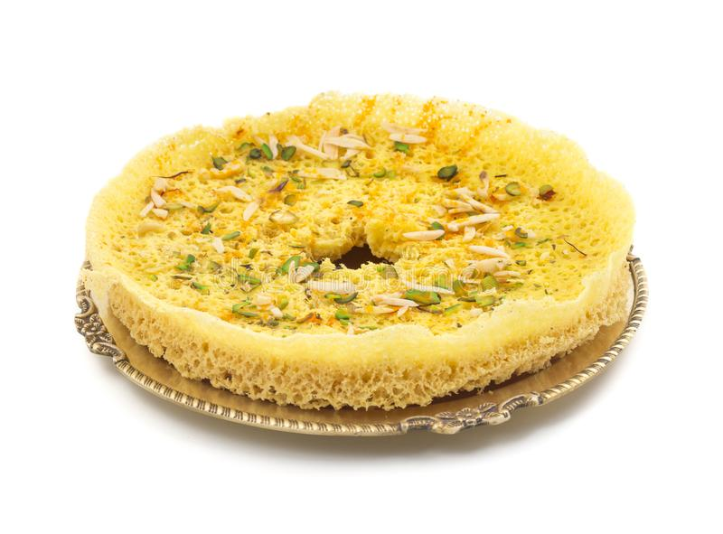

Ghevar is a traditional Indian dessert made with maida flour, ghee, sugar syrup and saffron. It is a popular dessert in Rajasthan and Gujarat. It is a crispy, porous and delicious dessert. It is a perfect dessert for festivals like Diwali, Holi, Eid, etc.

Ingredients
For Batter :
1/2 CupGhee / Clarified Butter
1 BlockIce
2 CupMaida
1/2 CupMilk, Chilled
3 CupWater
1 TspLemon juice
For Sugar Syrup :
1 CupSugar
1/4 CupWater
Other Ingredients :
Oil / Ghee for deep Frying
Dry Fruits, for Garnishing
1/4 TspCardamom Powder
Silver Vark for garnishing
Preparation
Pour one tablespoon of oil or butter and then add 1 small bay leaf, garlic cloves and chopped onions.
Fry them at high flame for 3 to 4 min until they are slightly roasted.
Add tomatoes and also add salt.
Cook them until they are soft. Add stalks of basil and cook until tomatoes and onions turn completely mushy.
Cool the mixture and remove the basil and bay leaf
Transfer it to a mixer and pour 1 cup water. The turn on the mixture
Place a sieve over a pan and pour the tomatoes which were in the mixer and filter. Then Bring the soup to boil on medium heat.
Meanwhile add corn flour and half cup water and mix well to make a slurry.
When tomato soup comes to boil add the corn flour mixture and mix it.
Then add sugar to it and add salt if required and when it boiled add herbs and then it ready to serve